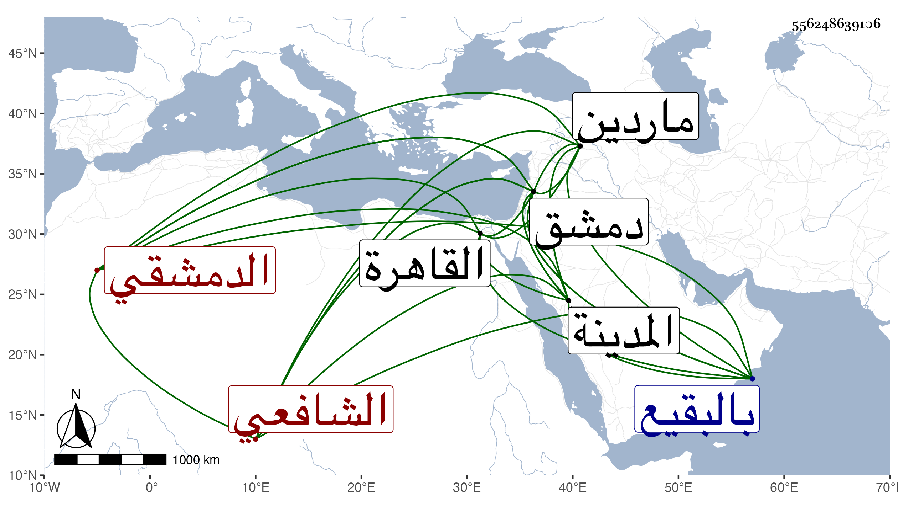

0902Sakhawi.DawLamic.ITO20230111-ara1.EIS1600.556248639106
Biography ID: 556248639106
844
علي بن عبد الله بن محمد بن الحسين بن علي بن إسحق بن سلام بن عبد الوهاب بن الحسن بن سلام العلاء أبو الحسن الدمشقي الشافعي ويعرف بابن سلام بالتشديد . ولد سنة خمس أو ست وخمسين وسبعمائة وحفظ التنبيه والمختصر الأصلي لابن الحاجب وتفقه بالشمس بن قاضي شهبة والعلاء حجي وغيرهما كالشهابين الزهري والحسباني ، ورحل إلى القاهرة فقرأ بها الأصول على الضياء القرمي وكذا قرأه على الركراكي المكي ولازم الاشتغال حتى تميز وأشير إليه بالفضل وهو صغير وكان يبحث في الشامية البرانية أيام ابن خطيب يبرود بل لم يكن يترك شيئا يمر به في الدروس حتى يعترضه وينتشر البحث بين الفقهاء بسبب ذلك وكان إنسانا حسنا دينا فاضلا عالما في الفقه وغيره حاد الخلق يستحضر كثيرا من الرافعي ويحفظ عليه إشكالات كثيرة وأسئلة حسنة ويعرف المختصر معرفة جيدة وكذا الألفية مع حفظ الكثير من تواريخ المتأخرين ويد طولى في النظم والنثر وتقلل من الكتابة على الفتوى وانجماع عن الناس ومداومة على التلاوة وحسن الصلاة والاقتصاد في ملبسه وغيره وشرف النفس وحسن المحاضرة ولم يكن فيه ما يعاب سوى إطلاق لسانه في بعض الناس وتعبيره عن ذلك بعبارات غريبة وبحثه أحسن من تقريره ومن نظمه :
| لو أن أعضا صب خاطبت بشرا | لخاطبتك بوجدي كل أعضائي |
| فارثي لحال فتى لا يبتغي شططا | إلا السلام على بعد بإيماء |
ولما أخذ التتار دمشق أسروه فتوجه معهم بعد أن حصل له نصيب وافر من العذاب والحريق وأخذ المال ثم هرب منهم من ماردين ورجع إلى دمشق وأقام بها ودرس بالظاهرية البرانية وقرره النجم بن حجي عقب موت البرهان بن خطيب عذراء في نصف تدريس الركنية وكذا درس بالعذراوية . مات في العشرين من ذي الحجة سنة تسع وعشرين بوادي بني سالم ونقل إلى المدينة فدفن بالبقيع رحمه الله . ذكره ابن خطيب الناصرية في علي بن سلام باختصار عن هذا وهو في عقود المقريزي وساق عنه فيما رواه له حكاية تدل لكونه عربيا .
